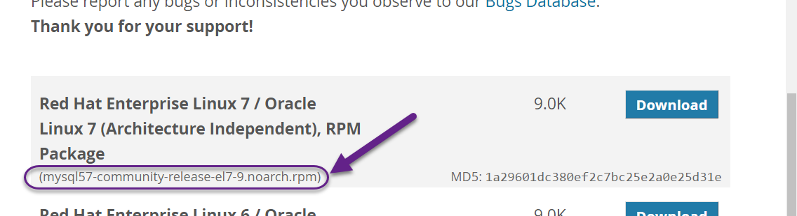
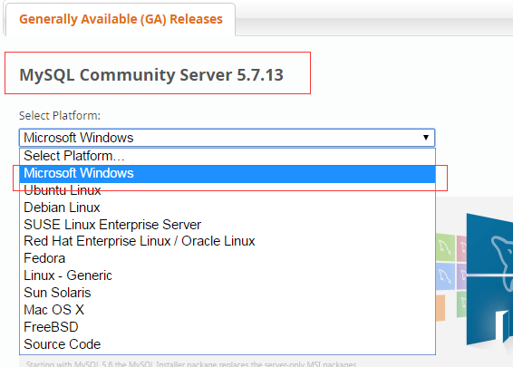
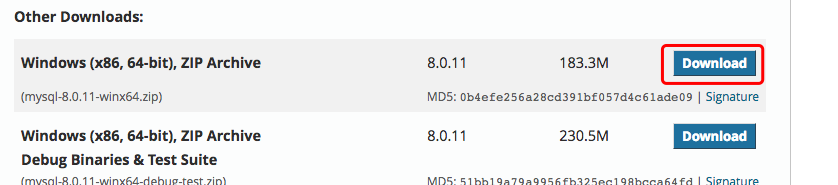
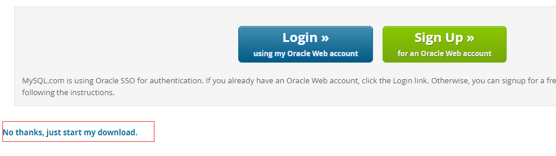
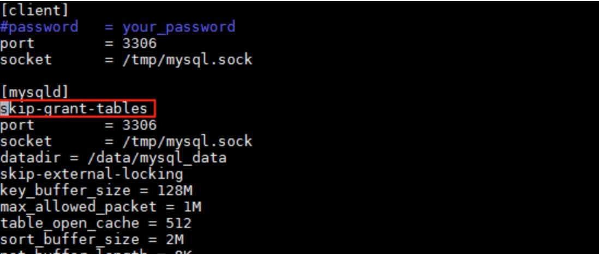
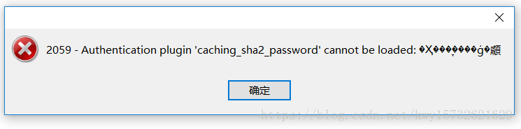

MySQL Instalación
La dirección de descarga de MySQL para todas las plataformas es:Descarga de MySQL. Elige el que necesitasMySQL Community Serverversión y plataforma correspondiente.
Nota:Durante el proceso de instalación, necesitamos instalar con permisos de administrador; de lo contrario, no se podrá instalar debido a permisos insuficientes.
Instalación de MySQL en Linux/UNIX
En la plataforma Linux se recomienda usar el paquete RPM para instalar MySQL. MySQL AB proporciona las siguientes direcciones de descarga de paquetes RPM:
- MySQL- Servidor MySQL. Necesitas esta opción, a menos que solo quieras conectarte a un servidor MySQL que se ejecuta en otra máquina.
- MySQL-client- Programa cliente de MySQL, utilizado para conectarse y operar el servidor MySQL.
- MySQL-devel- Librerías y archivos de inclusión. Si deseas compilar otros clientes MySQL, como módulos Perl, necesitas instalar este paquete RPM.
- MySQL-shared- Este paquete contiene bibliotecas compartidas (libmysqlclient.so*) que ciertos lenguajes y aplicaciones necesitan cargar dinámicamente para usar MySQL.
- MySQL-bench- Herramientas de referencia y pruebas de rendimiento para el servidor de base de datos MySQL.
Antes de la instalación, podemos comprobar si el sistema ya tiene MySQL instalado:
rpm -qa | grep mysql
Si tu sistema lo tiene instalado, puedes elegir desinstalarlo:
rpm -e mysql // 普通删除模式 rpm -e --nodeps mysql // 强力删除模式，如果使用上面命令删除时，提示有依赖的其它文件，则用该命令可以对其进行强力删除
Instalar MySQL:
A continuación, instalamos MySQL en un sistema CentOS 7 usando el comando yum. Cabe señalar que en la versión CentOS 7, la base de datos MySQL se ha eliminado de la lista de programas predeterminada, por lo que antes de instalarlo necesitamos ir al sitio web oficial para descargar el paquete de recursos Yum. La dirección de descarga es:https://dev.mysql.com/downloads/repo/yum/

wget http://repo.mysql.com/mysql-community-release-el7-5.noarch.rpm rpm -ivh mysql-community-release-el7-5.noarch.rpm yum update yum install mysql-server
Configuración de permisos:
chown -R mysql:mysql /var/lib/mysql/
Inicializar MySQL:
mysqld --initialize
Iniciar MySQL:
systemctl start mysqld
Ver el estado de ejecución de MySQL:
systemctl status mysqld
Nota:Si es la primera vez que iniciamos el servicio mysql, el servidor mysql primero realizará la configuración de inicialización.
Además, también puedes usar MariaDB en su lugar. El sistema de gestión de bases de datos MariaDB es una bifurcación de MySQL, mantenida principalmente por la comunidad de código abierto y bajo licencia GPL. Una de las razones para desarrollar esta bifurcación es que, después de que Oracle adquiriera MySQL, existía el riesgo potencial de que MySQL se convirtiera en código cerrado, por lo que la comunidad adoptó la bifurcación para evitar ese riesgo.
El objetivo de MariaDB es ser totalmente compatible con MySQL, incluyendo la API y la línea de comandos, para que pueda convertirse fácilmente en un sustituto de MySQL.
yum install mariadb-server mariadbLos comandos relacionados con la base de datos MariaDB son:
systemctl start mariadb #启动MariaDB systemctl stop mariadb #停止MariaDB systemctl restart mariadb #重启MariaDB systemctl enable mariadb #设置开机启动
Verificar la instalación de MySQL
Después de instalar MySQL correctamente, algunas tablas básicas se inicializarán. Una vez que el servidor esté en marcha, puedes verificar si MySQL funciona correctamente mediante pruebas simples.
Usa la herramienta mysqladmin para obtener el estado del servidor:
Usa el comando mysqladmin para comprobar la versión del servidor. En Linux, el binario se encuentra en el directorio /usr/bin; en Windows, el binario se encuentra en C:\mysql\bin.
[root@host]# mysqladmin --version
En Linux, este comando mostrará el siguiente resultado, que se basa en la información de tu sistema:
mysqladmin Ver 8.23 Distrib 5.0.9-0, for redhat-linux-gnu on i386
Si el comando anterior no muestra ninguna información después de ejecutarse, significa que tu MySQL no se instaló correctamente.
Usar MySQL Client (cliente MySQL) para ejecutar comandos SQL simples
Puedes usar el comando mysql en MySQL Client (cliente MySQL) para conectarte al servidor MySQL. De forma predeterminada, la contraseña de inicio de sesión del servidor MySQL está vacía, por lo que este ejemplo no requiere ingresar una contraseña.
El comando es el siguiente:
[root@host]# mysql
Después de ejecutar el comando anterior, se mostrará el indicador mysql>, lo que significa que te has conectado correctamente al servidor MySQL. Puedes ejecutar comandos SQL en el indicador mysql>:
mysql> SHOW DATABASES; +----------+ | Database | +----------+ | mysql | | test | +----------+ 2 rows in set (0.13 sec)
Lo que hay que hacer después de instalar MySQL
Después de instalar MySQL correctamente, la contraseña predeterminada del usuario root está vacía. Puedes usar el siguiente comando para crear la contraseña del usuario root:
[root@host]# mysqladmin -u root password "new_password";
Ahora puedes conectarte al servidor MySQL con el siguiente comando:
[root@host]# mysql -u root -p Enter password:*******
Nota:Al ingresar la contraseña, esta no se mostrará; solo ingrésala correctamente.
Instalación de MySQL en Windows
Instalar MySQL en Windows es relativamente más sencillo. La versión más reciente se puede ver enDescarga de MySQLen el centro de descargas (Instalación más detallada:Instalación de MySQL en Windows)。


Haz clic en elDownloadbotón para ir a la página de descarga. Haz clic en el de la siguiente figuraNo thanks, just start my download.para descargarlo de inmediato:
Después de la descarga, descomprimimos el paquete zip en el directorio correspondiente. Aquí coloco la carpeta descomprimida enC:\web\mysql-8.0.11en.
A continuación, necesitamos configurar el archivo de configuración de MySQL.
Abre la carpeta recién descomprimidaC:\web\mysql-8.0.11, crea en esa carpetamy.iniel archivo de configuración. Editamy.iniy configura la siguiente información básica:
[client] # 设置mysql客户端默认字符集 default-character-set=utf8 [mysqld] # 设置3306端口 port=3306 # 设置mysql的安装目录 basedir=C:\\web\\mysql-8.0.11 # 设置 mysql数据库的数据的存放目录，MySQL 8+ 不需要以下配置，系统自己生成即可，否则有可能报错 # datadir=C:\\web\\sqldata # 允许最大连接数 max_connections=20 # 服务端使用的字符集默认为8比特编码的latin1字符集 character-set-server=utf8 # 创建新表时将使用的默认存储引擎 default-storage-engine=INNODB
A continuación, iniciemos la base de datos MySQL:
Abre la herramienta de línea de comandos cmd como administrador y cambia de directorio:
cd C:\web\mysql-8.0.11\bin
Inicializar la base de datos:
mysqld --initialize --console
Una vez completada la ejecución, se mostrará la contraseña predeterminada inicial del usuario root, por ejemplo:
... 2018-04-20T02:35:05.464644Z 5 [Note] [MY-010454] [Server] A temporary password is generated for root@localhost: APWCY5ws&hjQ ...
APWCY5ws&hjQesa es la contraseña inicial, la necesitarás para iniciar sesión más adelante. También puedes cambiar la contraseña después de iniciar sesión.
Ingresa el siguiente comando de instalación:
mysqld install
Para iniciarlo, simplemente ingresa el siguiente comando:
net start mysql
Nota: en la versión 5.7 se necesita inicializar el directorio data:
cd C:\web\mysql-8.0.11\bin mysqld --initialize-insecureDespués de la inicialización, ejecuta net start mysql para iniciar mysql.
Iniciar sesión en MySQL
Cuando el servicio MySQL ya está en ejecución, podemos iniciar sesión en la base de datos MySQL mediante la herramienta de cliente que viene con MySQL. Primero abre el símbolo del sistema e ingresa el comando con el siguiente formato:
mysql -h 主机名 -u 用户名 -p
Descripción de parámetros:
- -h: Especifica el nombre de host de MySQL al que el cliente desea iniciar sesión. Para iniciar sesión en la máquina local (localhost o 127.0.0.1), este parámetro se puede omitir;
- -u: El nombre de usuario para iniciar sesión;
- -p: Indica al servidor que se usará una contraseña para iniciar sesión. Si la contraseña del usuario que va a iniciar sesión está vacía, puedes ignorar esta opción.
Si queremos iniciar sesión en la base de datos MySQL de esta máquina, solo necesitamos ingresar el siguiente comando:
mysql -u root -p
Presiona Enter para confirmar. Si la instalación es correcta y MySQL está en ejecución, obtendrás la siguiente respuesta:
Enter password:
Si la contraseña existe, ingrésala para iniciar sesión; si no existe, presiona Enter directamente para iniciar sesión. Después de iniciar sesión correctamente, verás el mensaje 'Welcome to the MySQL monitor...'.
Luego, el símbolo del sistema permanecerá conmysql>y un cursor parpadeante esperando la entrada de comandos. Ingresaexit 或 quitpara cerrar sesión.
Otras extensiones
argyi
150***62378@163.com
Restablecer contraseña de MySQL
Si olvidas la contraseña de MySQL, puedes restablecerla modificando el archivo my.cnf y agregando skip-grant-tables. Los pasos son los siguientes:
1. Abremy.cnfel archivo de configuración, encuentra[mysqld], y luego agrega el siguiente parámetro debajo de esa línea:

Reinicia el servicio MySQL:
Inicia sesión en MySQL. En este momento no se requiere contraseña; presiona Enter directamente:
Cambiarootla contraseña a123456：
mysql> use mysql; mysql> update user set authentication_string=password("123456") where user='root'; mysql> flush privileges; # 刷新权限Ten en cuenta que el nombre del campo de la contraseña en la versión 5.7 esauthentication_string, y en versiones anteriores espassword。
Después de modificar, recuerda comentarmy.cnfelskip-grant-tablesparámetro, reinicia el servicio MySQL y podrás iniciar sesión con la contraseña que configuraste.
argyi
150***62378@163.com
tianqixin
429***967@qq.com
Cerrar el servidor MySQL:
Entra en el directorio e inicia MySQL en modo seguro
Después de iniciar, el usuario root inicia sesión en mysql con contraseña vacía:
# mysql -u root mysql> update mysql.user set password=PASSWORD('123456') where User='root'; # 修改密码 mysql> flush privileges; # 刷新权限 mysql> quitIniciar MySQL:
Entonces podrás usar la nueva contraseña123456para iniciar sesión.
Si conoces la contraseña, puedes usar el siguiente comando:
tianqixin
429***967@qq.com
El pobre transeúnte
104***2177@qq.com
Si el método de arriba para cambiar la contraseña no funcionó (a mí no me funcionó), recuerdaupdatecuando lo hagas, de pasoplugincambiar amysql_native_password:
update user set authentication_string=password("123456"),plugin='mysql_native_password' where user='root';El pobre transeúnte
104***2177@qq.com
Transeúnte A
123***@mail.com
Primero, después de la instalación, al ejecutar cualquier comando aparecerá el aviso:
Puedes usar el siguiente comando para cambiar tu contraseña a 123456.
Después usa el siguiente comando para actualizar los permisos:
Ten en cuenta el punto y coma al final del comando.
Sal y vuelve a iniciar sesión.
Transeúnte A
123***@mail.com
Un novato
848***031@qq.com
Dirección de referencia
Solución para el paquete de la versión mysql 8.0.12 para Windows de 64 bits: no hay directorio data ni archivo my-default.ini tras descomprimir, el servicio no puede iniciar, y método para cambiar la contraseña inicial.
1. Si no tienes el archivo my-default.ini, puedes crear tú mismo un archivo my.ini en el directorio raíz, con el siguiente contenido:
2. Si configuras el directorio de almacenamiento de datos de la base de datos mysql:
Esto hará que el servicio no pueda iniciar. No agregues esta línea ni crees tú la carpeta data; deja que mysql genere data automáticamente.
Abre la ventana de comandos cmd como administrador (si la abres y ejecutas directamente, puede dar error) y entra al directorio bin del directorio de instalación de mysql. Luego ingresa el siguiente comando:
Al final se generará el directorio data.
Un novato
848***031@qq.com
Dirección de referencia
Silencio
201***7767@qq.com
Los problemas que me aparecieron al instalar mysql en Windows 10.
1. Error de codificación
Solución: convierte el formato del archivo my.ini a codificación ANSI.2. Error de zona horaria
Es necesario agregar en el archivo de configuración[mysqld]lo siguiente:
Silencio
201***7767@qq.com
helloworld
149***7918@QQ.COM
Dirección de referencia
Cuando cualquier comando que escribas muestra este error:
Significa que es necesario restablecer la contraseña. El comando para restablecer la contraseña es el siguiente:
Por ejemplo:
helloworld
149***7918@QQ.COM
Dirección de referencia
ezjoke
310***2940@qq.com
Dirección de referencia
4 métodos para cambiar la contraseña de root en MySQL (con Windows como ejemplo)
Método 1: usar el comando SET PASSWORD
Primero inicia sesión en MySQL.
Formato:
mysql> set password for 用户名@localhost = password('新密码');Ejemplo:
mysql> set password for root@localhost = password('123');Método 2: usar mysqladmin
Formato:
Ejemplo:
Método 3: editar directamente la tabla user con UPDATE
Primero inicia sesión en MySQL.
mysql> use mysql; mysql> update user set password=password('123') where user='root' and host='localhost'; mysql> flush privileges;Método 4: cuando olvides la contraseña de root, puedes hacer lo siguiente, con Windows como ejemplo:
ezjoke
310***2940@qq.com
Dirección de referencia
ezjoke
310***2940@qq.com
Dirección de referencia
Error 2059 al conectar Navicat con Mysql8.0.11
Al usar MySQL 8+ o superior, cuando navicat premium se conecta a la base de datos mysql, aparece el error 2059;
Causa:La regla de cifrado de contraseñas utilizada por las versiones 8+ escaching_sha2_password。Pero el controlador de navicat actualmente no es compatible con la nueva regla de cifrado. Hay dos métodos para resolverlo: uno es actualizar el controlador de navicat, y el otro es restaurar la regla de cifrado de la contraseña de inicio de sesión del usuario de mysql a mysql_native_password. Aquí cambiaremos la regla de mysql de vuelta a la anterior mysql_native_password,
ezjoke
310***2940@qq.com
Dirección de referencia
bless-zzh
472***701@qq.com
En versiones superiores a 8.0, para cambiar la contraseña usa:
Como:
Con el método anterior aparecerá este error:
ERROR 1820 (HY000): You must reset your password using ALTER USER statement before executing this statement.
Ten en cuenta que debe haber punto y coma.
bless-zzh
472***701@qq.com
Akari, el que no quiere dejar marcas
cre***rofm@yandex.com
Dirección de referencia
En algunas versiones posteriores a 8.0, usarmysqld --skip-grant-tablesel comando para omitir la autenticación de la tabla de permisos puede fallar y no mostrar ningún error.
En este caso, se puede usar:
Akari, el que no quiere dejar marcas
cre***rofm@yandex.com
Dirección de referencia